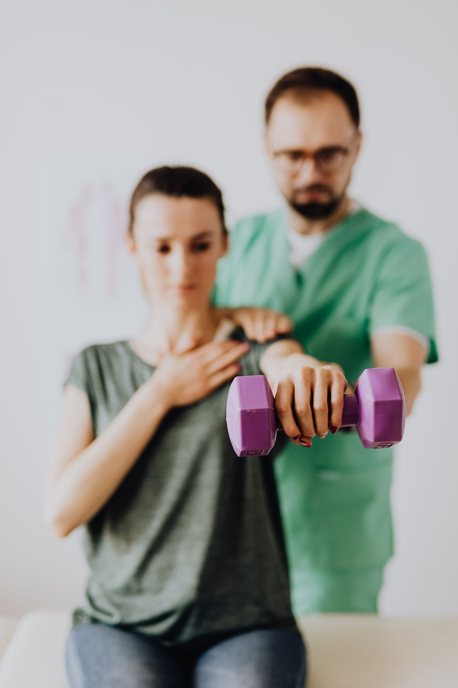

Car Accident Injury Rehab in Sterling Heights, MI
Injured in a Michigan crash? Your no-fault benefits cover physical therapy — often at little or no cost to you, depending on the coverage you carry. We handle the insurance so you can handle recovering.

Recovery after a Michigan crash
Michigan no-fault covers reasonably necessary rehabilitation after an auto injury. We handle the claim verification and the documentation your case needs — and your plan is measured the same way everything here is: a baseline, a goal tied to real life, and re-tests you can see.
Built for no-fault, not retrofitted to it
Michigan's no-fault system pays for reasonably necessary treatment after an auto accident — physical therapy included — with no set visit cap, regardless of who caused the crash. Most people never use these benefits correctly, and clinics built for ordinary insurance often fumble the paperwork. We built our intake around no-fault from day one: claim verification before your first visit, objective functional testing that documents your injuries at baseline and your recovery at discharge, direct communication with adjusters and, when you have one, your attorney.
Injuries we treat after a crash
- Whiplash and neck injuries
- Back injuries and disc symptoms
- Shoulder, knee and wrist trauma from bracing
- Headaches, dizziness and concussion-related symptoms
- Soft-tissue injuries that 'showed up a few days later'
1 · Claim verified first
Bring your claim number — or just the crash date and your insurer. We confirm coverage before your evaluation so there are no surprises.
2 · Injuries documented objectively
Computerized range-of-motion and strength testing at baseline creates the record your recovery — and your claim — deserves.
3 · Recovery, measured out
Re-testing at discharge shows exactly what changed. Reports go to your physician, adjuster, and attorney without being chased.
Related reading: physical therapy after a car accident — your first 30 days · does physical therapy affect your accident claim?
Michigan no-fault questions, answered plainly
Who pays for physical therapy after a car accident in Michigan?
Your own auto insurance usually pays, through Personal Injury Protection (PIP) benefits — regardless of fault. Treatment that is reasonably necessary for accident injuries is covered under the Michigan no-fault fee schedule; what you pay out of pocket, if anything, depends on your PIP coverage level and deductible.
Will no-fault pay the full cost of my therapy?
Often, but not always. Since Michigan’s 2019 no-fault reform, drivers choose their PIP medical coverage level — from unlimited down to lower limits, with options to exclude PIP medical if you have Qualified Health Coverage, or — for a driver with Medicare (Parts A and B) whose household members all carry their own qualifying coverage — to opt out of PIP medical entirely; each option has specific eligibility rules. There is no cap on the number of visits, but there can be a limit on total dollars, plus a possible deductible or coordination with your health plan. We verify your specific PIP coverage before your first visit and put your expected cost in writing. For questions about your own policy, your insurer or the Michigan Department of Insurance and Financial Services (DIFS) is the authority — see Michigan DIFS on choosing PIP medical coverage.
Is there a limit on physical therapy visits after a car accident?
No set visit cap exists under Michigan no-fault — the standard is whether care is reasonably necessary for your accident injuries. Your plan of care is driven by documented medical need, not an arbitrary number.
What if my pain started days after the accident?
Common and well-documented — soft-tissue symptoms often appear 24–72 hours post-crash. Get evaluated promptly: early care speeds recovery and creates the clean record your claim needs.
Can I still get treatment years after my accident?
Often yes, if the problem is causally related to the crash and care is reasonably necessary — flare-ups and post-surgical returns are common. One hard rule applies: services must be billed within one year of being provided, which is our deadline to manage, not yours.
Do I need a lawyer to get physical therapy covered?
No — PIP benefits are yours by law. If you do have an attorney, we coordinate documentation with their office; if you need one, we can explain what questions to ask, though we never receive or pay referral fees in either direction.
After a crash, the clock matters
Early evaluation speeds recovery and supports your claim’s documentation. Request an appointment now and a real person follows up within one business day.
Request an appointment